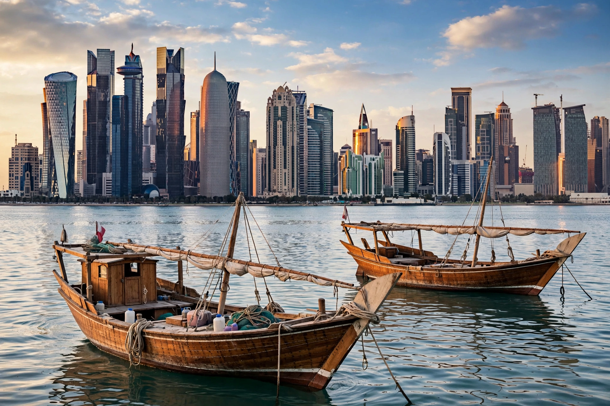

[Image placeholder: The West Bay skyline from the Corniche, Doha]| Country | Qatar |
|---|---|
| Population | About 1 million (city); most of Qatar's population lives in the Doha area |
| Founded | 1820s (as Al Bidda) |
| Known for | Al Jazeera; 2022 FIFA World Cup |
**Doha** is the capital and most populous city of Qatar, on a bay of the Persian Gulf. Founded in the 1820s, it was a small pearling and fishing port until oil (1949) and then natural gas transformed it. Today Doha is a global media and diplomacy hub — headquarters of Al Jazeera and host of Taliban and other negotiations — and a skyline of futuristic towers in the West Bay district.
Historic Doha survives in Souq Waqif, rebuilt in traditional style, and the Museum of Islamic Art (I. M. Pei, opened 2008) on its own island. The dhow harbour and the Corniche promenade curve around the bay to The Pearl, an artificial island development. In 2022 Doha and surrounding municipalities hosted the FIFA World Cup, the first in the Middle East, centred on new stadiums such as Lusail.
Gas wealth funded Education City (branch campuses of US universities), the aspiration to a knowledge economy, and vast infrastructure. Doha's population is overwhelmingly expatriate — foreign workers outnumber Qatari citizens several times over, a demographic fact underlying debates about labour rights, especially around World Cup construction.
Doha has a hot desert climate; summer temperatures exceed 45 °C with high humidity from the Gulf, while winters are mild. Air conditioning is universal; the World Cup was moved to November–December to avoid the summer heat.